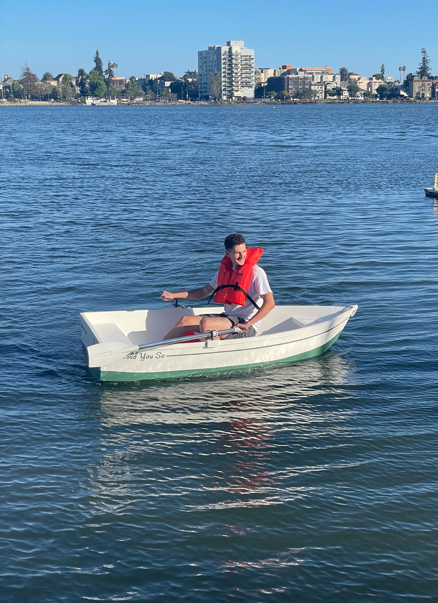
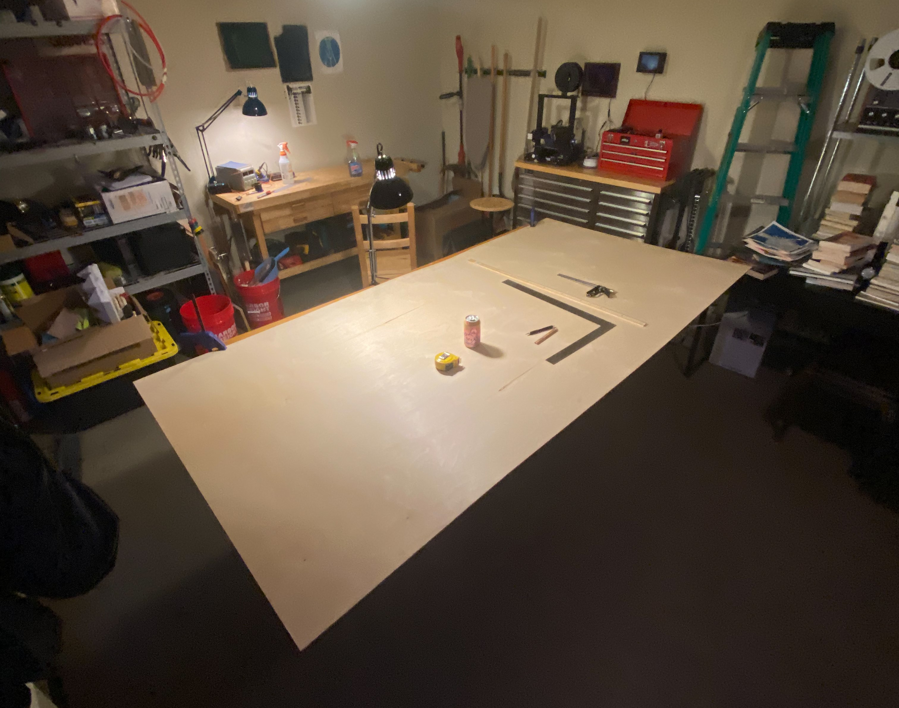
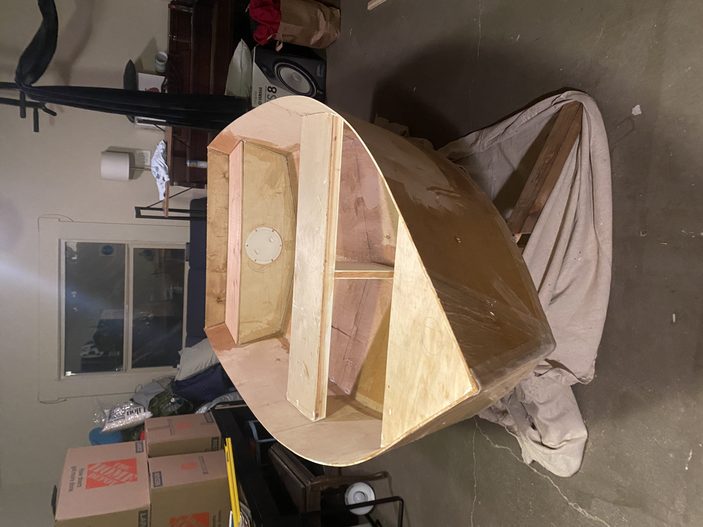
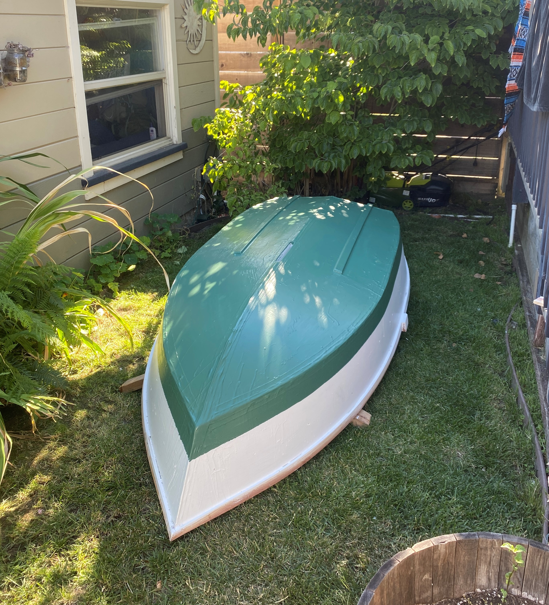
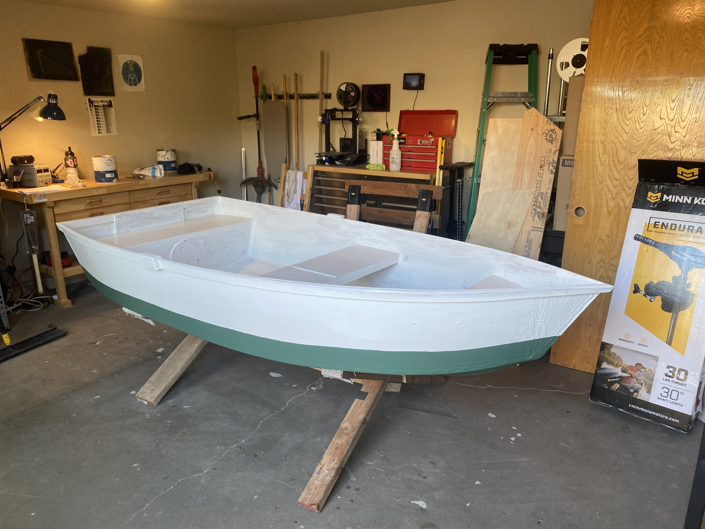
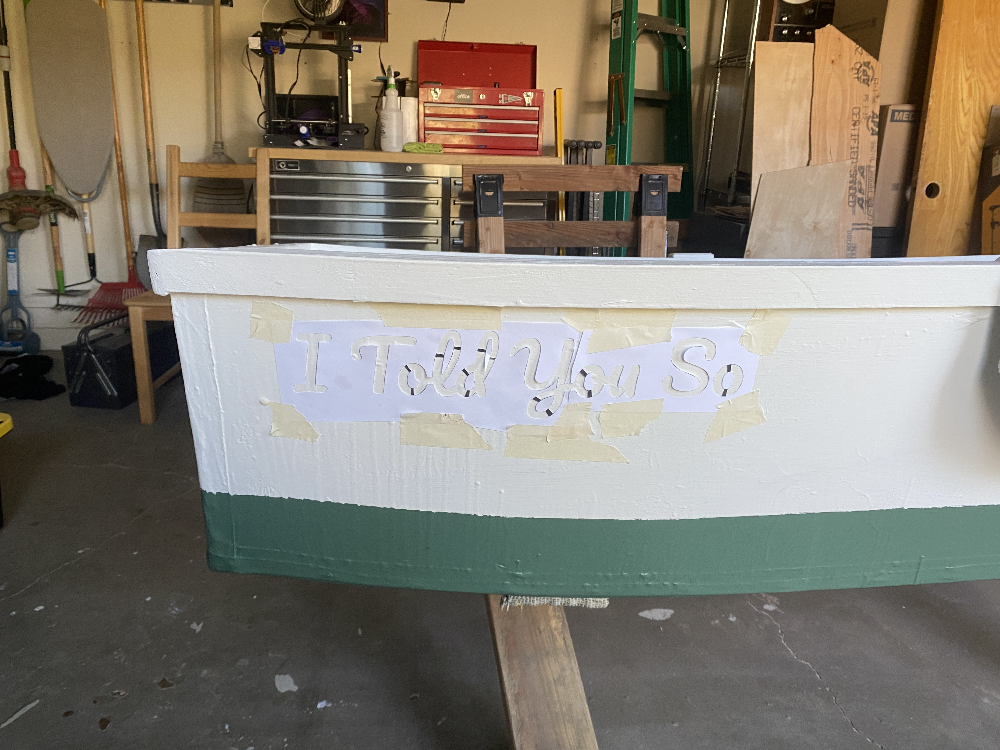
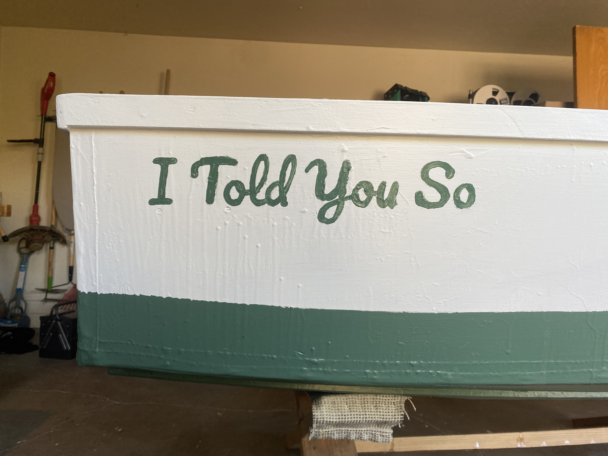
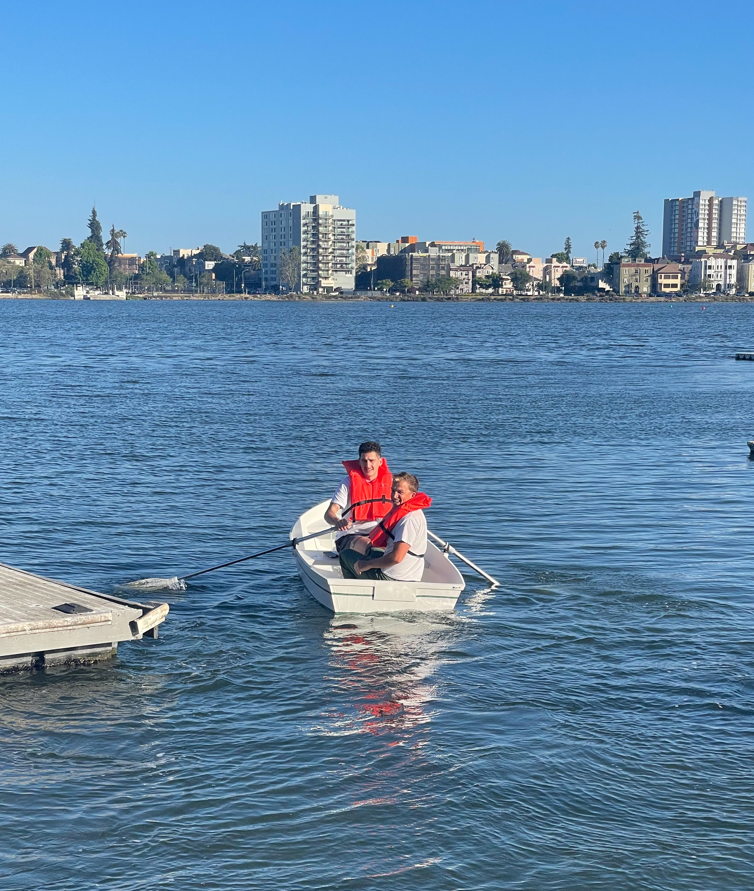
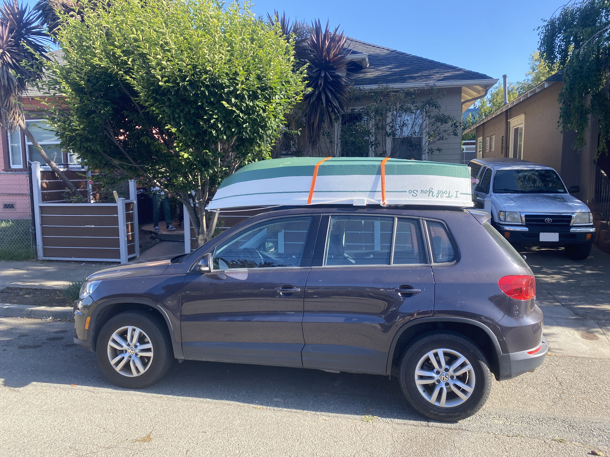

Intro
This project started when a few friends and I were planning our annual trip to Utica Reservoir in the Sierras. Zach has an inflatable boat and every year we load it up with camping gear and a 12 volt trolling motor and find an island to camp on for the weekend. We can usually find a whole island to ourselves and spend the time swimming and exploring the reservoir. This year, we had a few more people coming and were wondring if everyone would fit in the boat. That's when I offered to build a rowboat for some extra capacity. My roommate Sara didn't believe me. So I started in May and needed to finsih in early June, and the boat had a name before I even started, the I Told You So
This is a stitch-and-glue style boat, the easiest way to build a rowboat that I'm aware of. All you need to do is cut the pannel pieces out, stitch them together with wire, then fiberglass over the wire. The plans came from here
There are some very beautiful and fancy stitch and glue boats out there, this is not one of them. I was on a tight schedule to get the boat in the water before our trip. If you ever see it in person, just don't sight down the bow to see if it's straight, and don't look too closely at the gunwales. What I can promise you is that it floats.
Layout
The work starts with two sheets of 1/4" plywood. I laid out all the panel pieces according to the plans and cut them out with a jigsaw. Next I clamped matching pieces together and sanded them to the same shape. I did mess up one piece here, but I was able to expropriate enough plywood from nearby dumpsters to make up for it.
Stitching
Next I drilled holes in the pieces every few inches and tied the edges together with wire. This is the part I had the most trouble with. I couldn't quite get everything to line up on the corners. I don't know if other people building stitch and glue have this same problem, and I never figured out the cause of the issue. After a few days of wrestling with it and re-stitching many of the joints I got it to a place that seemed good enough and kept going.
The keel pieces stitched together
The main hull stitched together
Gluing
Once everything was stitched together I laid one layer of fiberglass tape on the inside of all the joints, covering up the wire. After this layer was complete I cut the tied ends of every wire flush with the outside of the boat. Then I flipped the boat over and sealed the outside joints with two layers of fiberglass.
The inside glued

The outside glued
Finishing
After the main hull was fiberglassed and complete I added the three seats and sealed them up. There are no frames inside the boat and it gets all of its lateral stiffness from the seats. This seems to work well enough.
Next I added the gunwales which are a bent lamination. I don't have a table saw for the thin strips of wood needed, so I rigged up a fence to the bottom of my circular saw. This is a very dangerous techniqe that permenantly opens the blade guard and for legal reasons I don't recommend it, but you can't argue with the results.
Circular saw fence

The finished strip
Laminating the gunwales
Adding some extra stiffeners to the transom
Finally I put on several coats of paint and the name.
   On The Water
And it's done! The week before the trip with the paint still wet I tested out the boat in Lake Merrit in Oakland.
A few days later we put it on top of the car and brought it to the reservoir!


This was a great project that took my full attention for over a month. I dedicate the boat to Sara. I never would have finished this if it weren't to spite you, and for that I thank you.
Next Steps
On the big trip we noticed a few issues with the boat. There is no skeg and it is way too spinny in the water. This should be an easy fix before our next trip.
The other addition I'd like to make is a sailing rig. I would need a rudder and daggerboard and sail so it would be quite a big project, but I always loved dinghy sailing when I was a kid and I'd love to do it again someday.